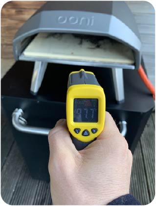

OONI KODA PIZZA OVEN
by Jay Muskett
Welcome to the Ooni Koda portable pizza oven...
Firstly you may be thinking how is this even portable, I asked myself the same question.
The legs fold underneath the body and you are easily able to carry/store this oven. Ooni do have carry cases availlable for their pizza ovens.
People have taken these away with them, just be sure to remember to find a gas bottle and that you have the correct gas regulator(they vary from country to country)
The Koda model is available in two sizes 12 and 16 inch, the 12 inch model retails around 349 euros(2500;dkk)
Additional equipment is option but would highly recommend a pizza peel(shovel like prodct to get the pizza in and rotate during baking) and an infrared thermometre, as its critical that you know when the stone is hot enough. You want to aim for 500degrees/950f before it goes into the oven.
If you want a pizza oven that is capable of fitting onto a small terrace/balcony or without wanting to build one from bricks then these are great for creating neapolitan style pizza and other pizza styles when I come to think of it.
It is even able to roast meat and vegetables/bake tradtional bread so it is multi-purpose and is a great investment for pizza lovers; beginner to expert.
Ooni provide a wide range of ovens, that are fuelled by either wood or gas even ovens that can use both fuel types
Are craving pizza now much like me?
